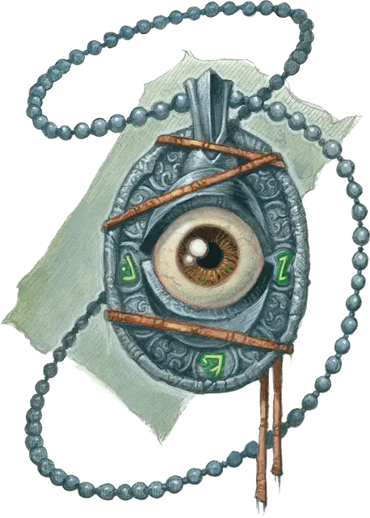

Ведьмин глаз
Hag Eye
Чудесный предмет, необычный

Рекомендованная стоимость 400 зм
Ведьмин глаз имеет 3 заряда. Пока вы носите или держите этот предмет, вы можете потратить 1 заряд, чтобы сотворить Тёмное зрение (только на себя) или Видение невидимого. Ведьмин глаз восстанавливает все потраченные заряды на каждом рассвете.
Видение ковена. Ведьмин глаз обычно вверяется слуге карги для хранения и переноски. Действием Магия карга, принадлежащая к создавшему этот Глаз ковену, может видеть то, что видит Ведьмин глаз, если карга и Глаз находятся на одном плане бытия. Этот эффект длится, пока карга поддерживает Концентрацию на нём. Сразу несколько карг ковена могут одновременно смотреть через Ведьмин глаз.
Создание Ведьмина глаза. Только ковен карг может создать такой предмет; он делается из настоящего глаза, покрытого лаком, и часто прикрепляется на подвеску или другой носимый предмет. Каждый ковен может иметь только один Ведьмин глаз одновременно, и создание нового требует специального обряда, проводимого всеми тремя каргами ковена. Этот обряд занимает 1 час, и карги не могут его провести, если хотя бы одна из них Недееспособна. Если во время обряда карга совершает любое другое действие, обряд проваливается и завершается.